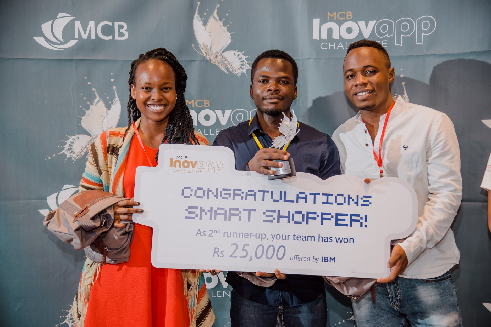

Portfolio
I have experience ranging from drone building to marketing and sales. Read about my involvement below.
-

I worked in a team of 3 over a 24-hour hackathon to build and deploy a mobile application that would enable Mauritians to navigate through supermarkets and pay through the Mauritian Commercial Bank API. Our impressive concept and well-communicated presentation saw us awarded 2nd runners up at the hackathon. This experience sparked my interest in motivating other young girls to solve challenges using technology. Read more on the lessons I gained by clicking on the picture above.
Founder & CEO | Vikuku.shop
Jewelry BusinessFounded in 2016, Vikuku (which means bracelets in Swahili) retails high quality jewelry for both men and women. I built this business after identifying a niche in the African market for a jewelry brand that focused on ceramic and wood material, on top of the commonly found brass material. We received an overwhelming response from both men and women. This experience has grown my marketing & sales skills, with particular focus on creative thinking and data analysis. Click on the image to see more of what vikuku.shop has.

Drone Interview
VideoThis video features me in a candid interview by my university, The African Leadership University, about a drone we built during our first year of university. Click on the image to redirect to the Youtube video.